Sélection de visuels et de supports de communication conçus lors de mes missions et de ma formation en marketing digital.
Conception de visuels modernes et dynamiques, basés sur les couleurs de la charte graphique, pour promouvoir les événements de l'entreprise en reflétant leur énergie et en renforçant l'appartenance des amateurs de basket à la communauté.
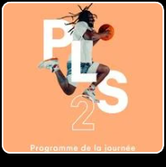
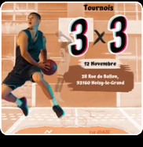
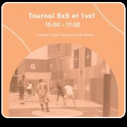
Réalisation de visuels dont un flyer pour présenter l'entreprise et un second pour informer les seniors sur des conseils santé. Pour capter l'attention de la cible et faciliter la compréhension, j'ai opté pour des visuels aux couleurs douces, en cohérence avec l'objectif de promouvoir la santé physique et mentale.
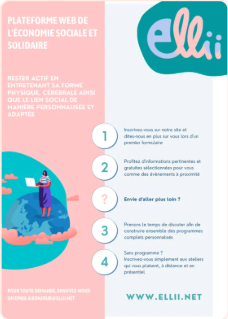
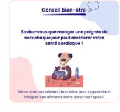
Création de visuels afin d'informer la communauté de la participation de l'entreprise à un événement, promouvoir un jeu concours et valoriser une collaboration BtoB avec une autre marque. Un design urbain et moderne a été pensé pour transmettre les messages clés à une cible jeune passionnée de pop culture.
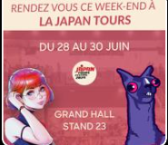
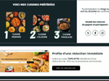
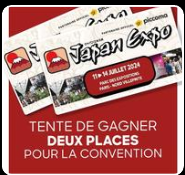
Présentation de l'édition spéciale d'un produit à l'occasion de l'anniversaire de la marque.
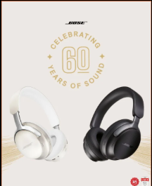
Création d'une landing page de site internet pour une solution SaaS destinée aux petites entreprises.
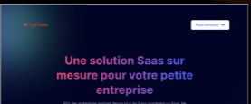
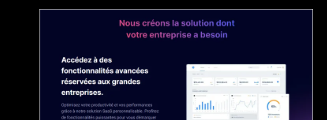
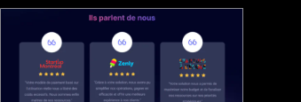